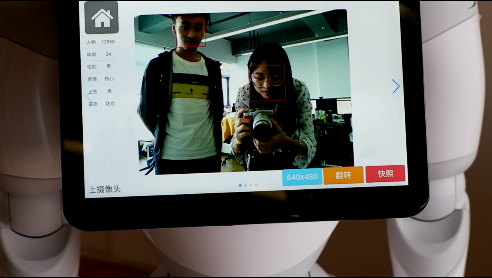
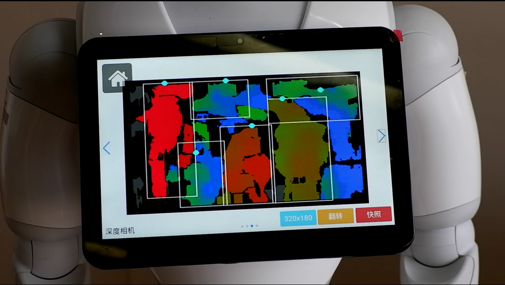
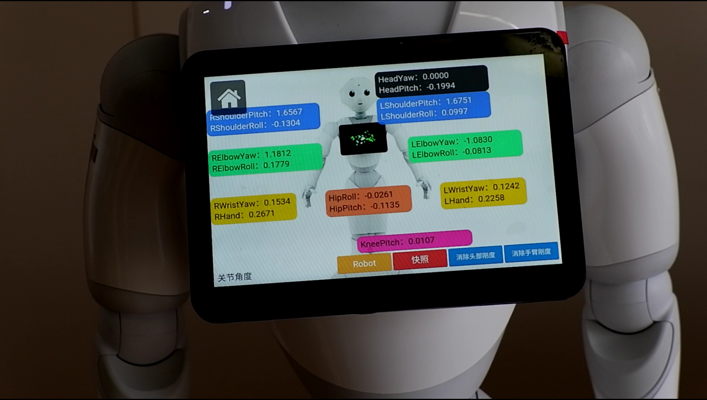
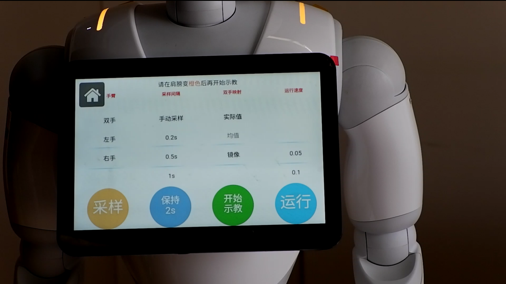
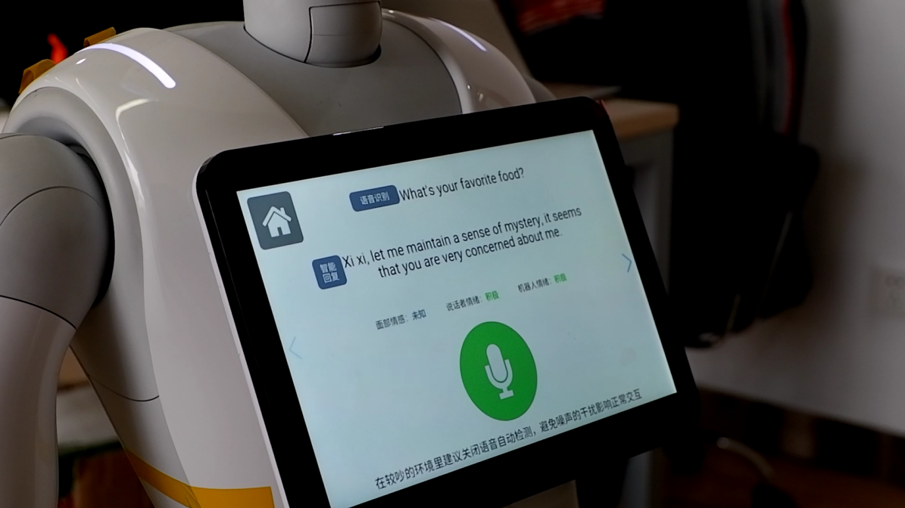
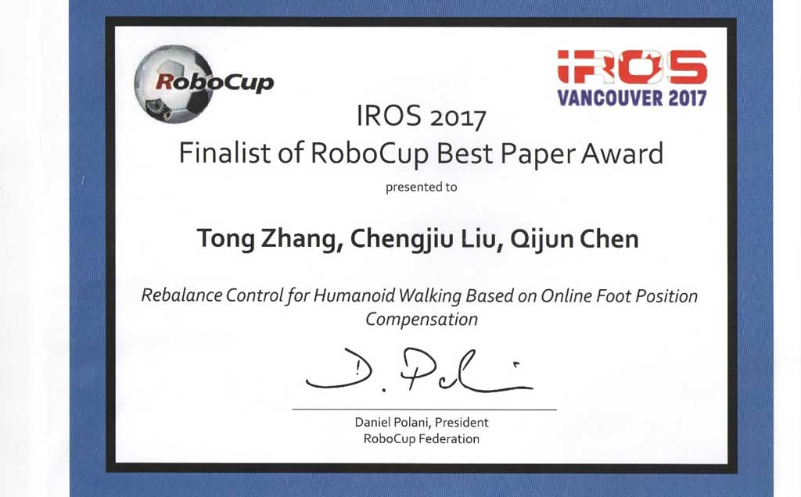

Introduction
The Robotics and Artificial Intelligence Lab (RAIL) of tongji university was founded in 1992, Team TJArk of RAIL was founded in 2004 and participated in RoboCup World Cup from 2006 to 2018. We have got seven winning streak in China RoboCup SPL and once won the third place in RoboCup2018 SPL. In December 2018, we founded an energetic new team to participate in RoboCup @Home League, called TJArk@Home. Main goal of TJArk@Home is to explore the limit of how well can robots serve people during common life with acceptable cost. Under the guidance of such wish, we are doing many research on the Pepper platform, such as
- SLAM(Simultaneous Localizaiton and Mapping)
- Auto navigation of robot
- Object Detection and Recognition
- Human-face detection and analysis
- Human-Robot interaction
- Motion control
- Trajectory teaching
- Design of laptop GUI
- …
Pepper needs a model (a map) of the environment to support other tasks, but a prior map is often not available in various home scenarios, so SLAM find its application. We mainly use the stereo camera to develop a visual SLAM module. Our algorithm is based on RTAB-Map and have been modified for Pepper’s sensors. Then, we use DWA to plan the path and fuse vision, laser and sonar data to make real-time obstacle avoidance, so Pepper can navigate to its goal points itself. The SLAM and navigation framework is running on ROS.

Various vision algorithms are needed for more careful perception and analysis of Pepper’s environment pn object and huamn level. To start interaction, our Pepper can detect and recognize different people, remember their names and some other features, and track them using its camera data. Then, more interested skills will be shown to carry more complex tasks. For example, some tasks require human posture recognition so an alogorithm based on ?? is developed. It can recognize human skeleton so that we can judge whether a person is standing, sitting or pointing somewhere. For object-level environment reasoning, a detection and recognition framework based on YOLO can quickly detect a predefined object and print its predefined name in the figure. (插一两张图？？) We designed a user-friendly interface so even people unfamiliar to robotics can quickly operate on Pepper. Just by a browser, different devices are able to access to the GUI and control Pepper’s behaviors.
 |
 |
|---|---|
|  |  |
|  |  |
We have developed a Python framework, which is a high-level package of NAOqi APIs and ROS-based components. Every team member can write his/her own lib files, such as “LibMoiton”, “LibDetection”, and add it to the framework easily. At the game site, Pepper can use these lib files to perform various, more complex tasks. The framework is still in developing, so we don’t open its source yet. In 2019, the first year for our team to participate in Pepper games, we won the champion of China RoboCup@Home SSPL. We are eager to show our work on a broader stage!
Team members
Deng Xiuqi(Graduate student, Department of Control Science and Engineering) He Zongtao (Leader, Graduate student, Department of Control Science and Engineering) Xu Weihan ( Graduate student, Department of Control Science and Engineering) Zhou Xun ( Graduate student, Department of Control Science and Engineering) Liu Zhihao ( Graduate student, Department of Control Science and Engineering) Wang Liuyi ( Senior student, Automation) Wang Naijia(Senior student, Automation) Du Jiayuan(Senior student, Automation) Lu Liwen(Senior student, Automation)
Publications

Contact us
Email: raven025@outlook.com
Link
RoboCup@Home: https://athome.robocup.org/
Media
三张照片（合照，获奖证书，Pepper） 三段视频